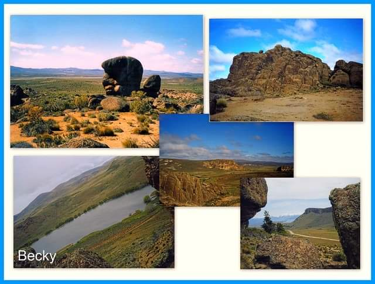

TIPO DE SUELO ESTEPA |
|---|
|
La estepa ?es un bioma que consiste en un territorio de vegetación herbácea, propio de climas extremos y escasas precipitaciones.  |
"TIPOS DE ESTEPA"Estepa norteamericana Estepa subtropical Estepa Puneña o Desierto andino Estepas ibéricas Estepa arbustiva mediterránea Estepa de Anatolia central Estepa de Oriente Próximo Estepa de enebros del Gran Atlas Estepas y bosques nord-saharianos Estepa montana de Anatolia oriental Estepa póntica Estepa y desierto arbustivo de Azerbaiyán Estepa y sabana arbolada del Sahara meridional Estepa patagónica  |
|